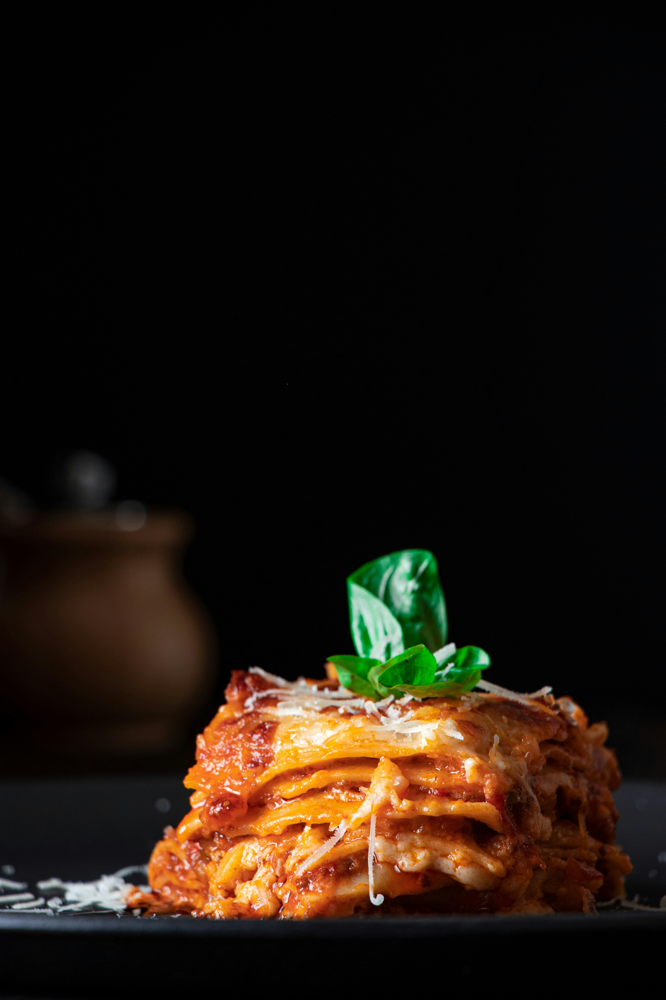

<!doctype html>
<html lang="en">
  <head>
    <link rel="stylesheet" href="../styles.css" />
    <meta charset="UTF-8" />
    <meta name="viewport" content="width=device-width, initial-scale=1.0" />
    <title>Lasagna Recipe</title>
  </head>
  </html>
    <h1>Lasagna Recipe</h1>
    
    <h2>How to make lasagna just like your grandmother used to!</h2>
    
    <p>
      Lasagna is a classic Italian dish that consists of layers of pasta, meat sauce, and cheese. To make lasagna, you will need the following ingredients:
    </p>
    <div class="recipe-content">
    <ul class="ingredient-list">
    <h3>Ingredients</h3>
    <h4>The Meat Sauce</h4>
      <li>1 pound of ground beef</li>
      <li>1 onion, chopped</li>
      <li>2 cloves of garlic, minced</li>
      <li>1 can of crushed tomatoes</li>    
      <li>1 can of tomato sauce</li>
      <li>1 teaspoon of dried basil</li> 
      <li>1 teaspoon of dried oregano</li>
      <li>1/2 teaspoon of salt</li>
      <li>1/4 teaspoon of black pepper</li>
    <h4>The Cheese Filling</h4>
    <li>16 ounces of ricotta cheese</li>
    <li>2 cups of shredded mozzarella cheese</li>
    <li>1/2 cup of grated Parmesan cheese</li>
  <h4>The "Glue"</h4>
    <li>12-15 Lasagna noodles</li>
    <li>450 grams of Mozzarella cheese, shredded</li>
  </ul>
<ol class="instructions-list">
  <h3>Instructions</h3>
    <h4><li>Build the Sauce Base</li></h4>
    <p>In a large pot or Dutch oven, brown the beef and sausage over medium-high heat. Drain most of the fat, leaving just a bit to sauté the onions and garlic until soft. Stir in the tomato paste, crushed tomatoes, and herbs. Simmer on low for at least 30 minutes (an hour is better if you have the time).</p>
    <h4><li>Ricotta Mix</li></h4>
    <p>In a medium bowl, whisk the egg, then fold in the ricotta, parsley, and Parmesan. Season with a pinch of salt and pepper. Set aside.</p>
    <h4><li>Assemble the Layers</li></h4>
    <p>Preheat your oven to 375°F (190°C). Grab a 9x13 inch baking dish and layer.</p>
    <h4><li>The Bake</li></h4>
    <p>Cover the dish with aluminum foil and bake for 25 minutes. Remove the foil and bake for an additional 25 minutes, or until the cheese is bubbly and golden brown. Let the lasagna rest for about 15 minutes before slicing and serving. Enjoy!</p>

  </ol>
  
</div>
    <a class="home-button" href="../index.html">Home</a>
  </body>
</html>
